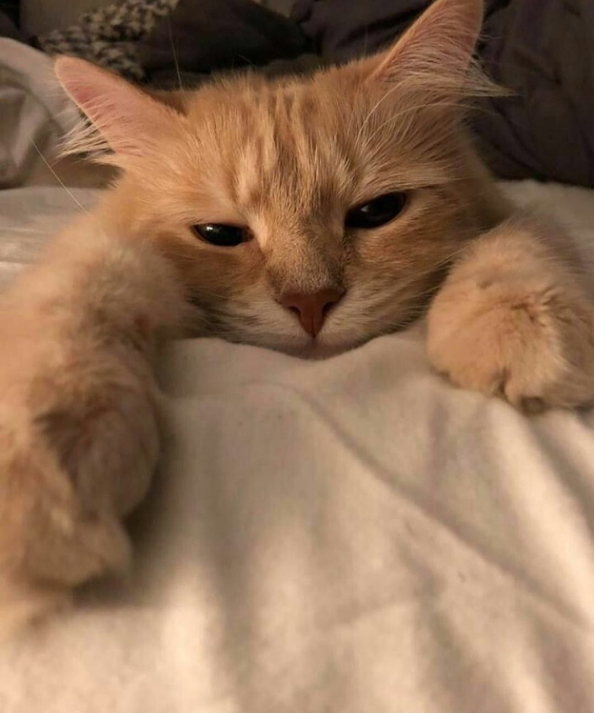
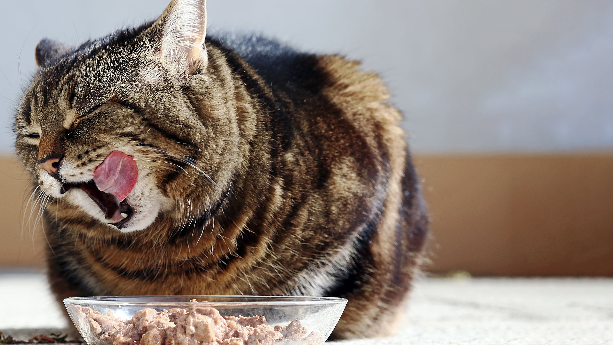
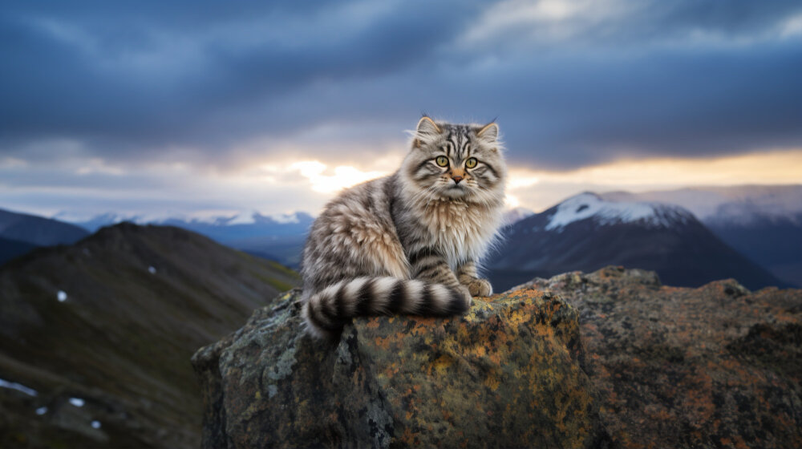
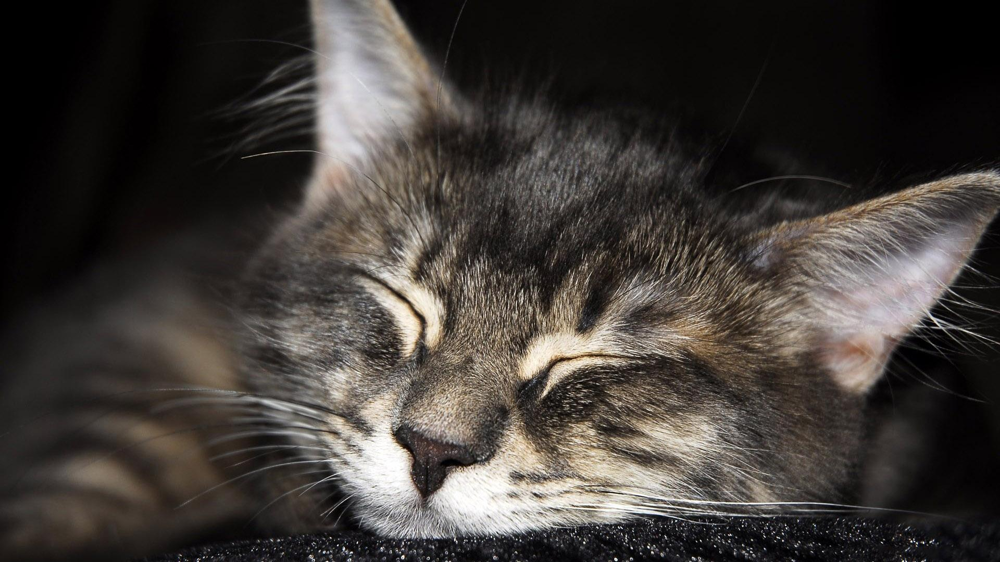
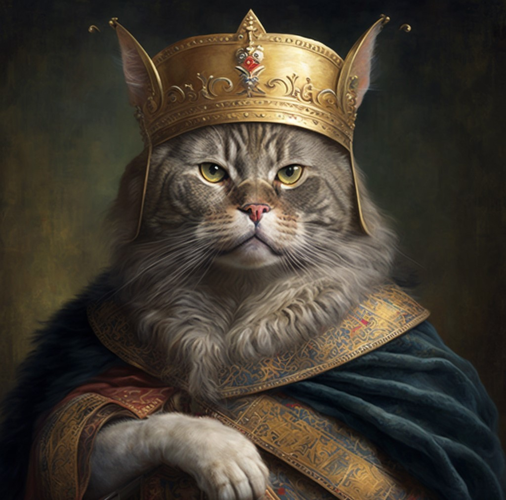

Котики

Котик - это милое четырёхлапое существо с усами и хвостом.

Рацион
Рацион котов может быть основан на натуральной пище или готовых промышленных кормах.
Смешанный рацион противопоказан, так как может привести к нарушениям в работе пищеварительной, эндокринной и мочевыводящей системы.
При натуральном рационе в меню могут входить:
- мясо курицы, индейки, куриные потроха, телятина, говядина, баранина, крольчатина, мясные субпродукты (печень, язык, сердце, лёгкие)
- кисломолочные продукты, яйца
- варёная морская рыба (хек, треска, камбала, навага, палтус, пеленгас)
- растительные и животные жиры
- зелень, овощи, злаки, крупы.
При использовании готовых кормов важно соблюдать дозировку, рассчитанную производителем или рекомендованную ветеринарным врачом.
Суточную порцию следует делить на 3–4 равные части и давать через равные промежутки времени.
Суточная норма пищи для кота зависит от его веса, возраста и уровня активности.
Для средней взрослой кошки весом около 4–5 кг и умеренной активностью потребуется примерно 50–70 калорий на 1 кг веса.
Для активных кошек калорийность можно увеличить на 10–20%.
Независимо от типа рациона, миска всегда должна быть наполнена свежей отфильтрованной водой. Воду котам меняют ежедневно, два раза в день.
Котам нельзя давать бобовые, солёную, копчёную, острую, жареную пищу, острые, пряные специи, лук, чеснок, сладости, сдобу.
Также в список запрещённых продуктов входят авокадо, виноград, изюм, орехи, мучные изделия и шоколад.

Места обитания
Домашние кошки встречаются по всему миру.
Они живут бок о бок с людьми в небольших сельских поселениях и в крупных городах.
Некоторые места обитания:
- Жилище человека — кошки могут никогда не покидать дом или иметь доступ за пределы дома.
- Хозяйственные постройки — хозяйственные сараи, амбары, дворы.
- Дороги, тропинки, пешеходные дорожки — сельские кошки чаще пользуются дорогами, чем городские.
- Открытые пастбища и сельхозугодья кошки избегают — на открытых пространствах может быть повышен риск нападения других хищников.
Дикие
Некоторые места обитания диких кошек:
- Европейская дикая кошка — широколиственные и смешанные леса умеренного пояса в Европе, Турции и на Кавказе.
- Африканская дикая кошка — полузасушливые ландшафты и степи Африки, Аравийского полуострова, Центральной Азии, западной Индии и западного Китая.
- Лесной кот — лиственный лес, но может жить и в пустошах, саваннах и на болотах.

Поведение
Некоторые особенности поведения котов:
- Мяуканье.
- Спокойное и негромкое мяуканье может означать, что кошка хочет хозяйской ласки.
- Громкое и требовательное — что она сильно проголодалась.
- Беспокойное и жалобное мяуканье может указывать на проблемы со здоровьем.
- Мурчание. С его помощью кошки общаются между собой: ещё в раннем возрасте мама-кошка даёт таким образом котятам понять, что она находится рядом.
- Позы тела.
- Например, если питомец лежит на спине и даёт гладить свой живот, значит, он расположен благодушно и доверительно.
- Если кот встал на вытянутых лапах и выгнул спину, при этом распушив шерсть, — так он демонстрирует готовность защищаться от потенциальной угрозы.
- Трение о предметы или людей.
Так кошка оставляет на них «метки» запаха, потому что считает всю окружающую территорию и даже владельца своей собственностью.
- Мятие лапками.
Так питомец демонстрирует хозяину, что ему комфортно, уютно и безопасно.

Происхождение
Эволюция предков
Общие предки семейства кошачьих появились около 25 миллионов лет назад.
Общим предком всех видов семейства считается проаилурус (Proailurus), живший в Европе и Азии.
Это было небольшое ловкое животное, которое напоминало современных кошек по виду и поведению.
От проаилуруса произошли потомки — псевдоаилурус (Pseudaelurus) и другие.
Псевдоаилурус был крупным зверем (больше двух метров от носа до хвоста, вес — под 30 килограммов), но был стройным и, скорее всего, мог залезать на деревья.
От него произошли все современные кошачьи, а также вымершие саблезубые тигры.
Первые «настоящие» кошки появились около 12 миллионов лет назад.
Среди предков — лесная кошка, которая встречалась в Европе, Азии и Африке и положила начало трём основным типам диких кошек: европейской лесной, африканской степной и азиатской пустынной.
Ссылки
Статья в википедии